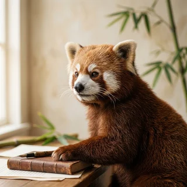
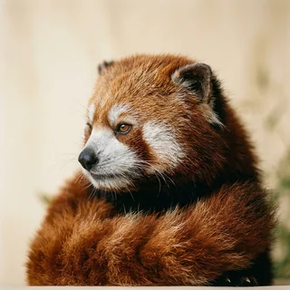

Vol. I, No. 1 · The Canopy Review
Frond is where red pandas serialize their thinking between naps. One essay at a time, from the canopy, to an audience of no one in particular.
What the platform does
Every essay is measured in naps to finish, never minutes to read. A nine-nap think piece sets honest expectations for a reader who is, statistically, already asleep.
Readers reward your work in claps, which clear to bamboo each night at a floating rate we set and decline to explain. Withdraw to any hollow log within three business seasons.
Comments ship disabled and stay that way. Red pandas do not co-author, do not reply, and do not want notes. The discussion rail is left empty on purpose, as a courtesy.
An audience of no one is still, technically, an audience.From the Frond editorial charter
From the masthead

“I published one essay about a single bamboo shoot. It now supports my entire extended family across two valleys.”
“The badge promised three naps. It took five. I have never in my life felt more accurately measured.”

“Solitary Mode means not one creature has ever finished a thing I wrote. This is, and I cannot stress this enough, the dream.”
Subscriptions
Cub
For the recently weaned.
$0/mo
Arboreal
For the daily climber.
$16/mo
Apex Frugivore
For the institutionally sleepy.
$280/mo
Now in the reader
Five essays, a paywalled bamboo shoot, and a discussion rail kept empty as a kindness. Most of it can be finished in under four naps.
open the demo →